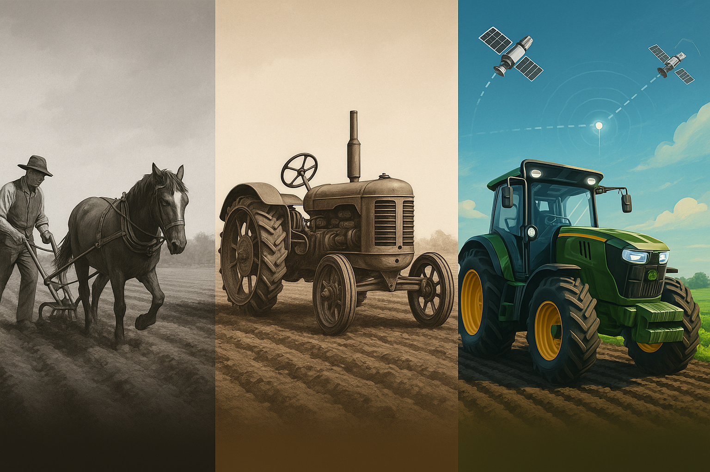

Välkommen till min digitala presentation
Jag heter Johanna Johansson och arbetar som systemutvecklare och systemförvaltare. Mitt arbete handlar om att skapa en modern, säker och effektiv digital välfärd – där tekniken stödjer verksamheten och frigör tid till det som är viktigast.
Genom att införa ett agilt arbetssätt har jag kunnat leverera lösningar snabbt och effektivt som gör konkret nytta. Jag arbetar nära verksamheten, med fokus på kvalitet, säkerhet och praktisk effekt.
Vi gör det här för att underlätta vardagen för personalen – men i slutändan är det omsorgstagarna vi finns till för. Varje förbättring ska bidra till tryggare vård, ökad delaktighet och mer tid för mänskliga möten.
"Jordbruket – från häst till självkörande traktor"
